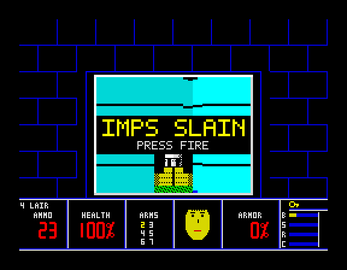
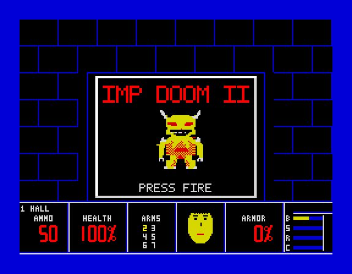

Screenshots


The same four levels with the imps and items moved around: every new game is a little different.
Runs in your browser on an emulated Timex Sinclair 2068. Not affiliated with id Software or Bethesda.

Compared with the first game:

The tune of Imp Doom II (E phrygian: two passes of a 17 second loop), exported from the project’s model of the TS2068 sound chip. In the game it plays at a fixed, quiet volume under the effects.
| Action | Keys | Gamepad |
|---|---|---|
| Forward / back | Q / A, or cursor up / down | up / down |
| Turn left / right | O / P, or cursor left / right | left / right |
| Strafe left / right | Z / X | - |
| Fire | SPACE | fire button |
| Use (open the locked door, once you have the key) | E or ENTER | - |
| Start, restart, continue (title, death and win screens) | SPACE or ENTER | fire button |
Keys can be combined (walk and turn, strafe and fire). Click the picture first so it gets the keyboard; the sound starts on the first click or key. A connected gamepad is read as joystick 1.
Play Imp Doom II Download the cartridge (.dck)
The .dck file is a DOCK cartridge image for the TS2068; emulators that take dock cartridges can load it.